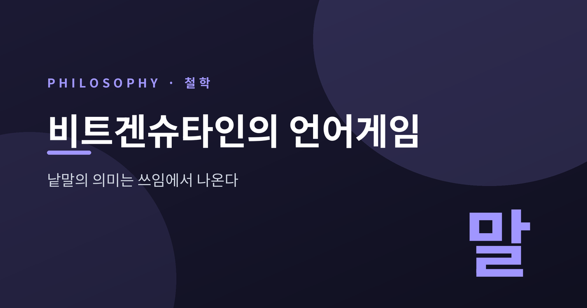
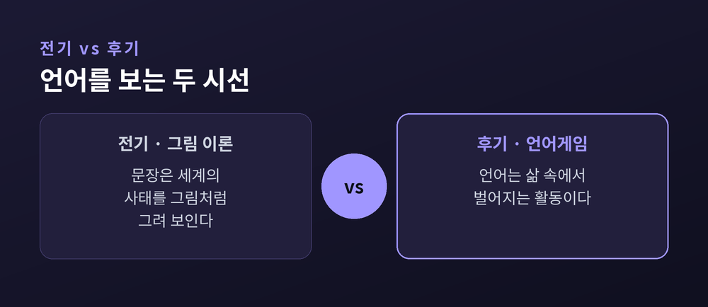
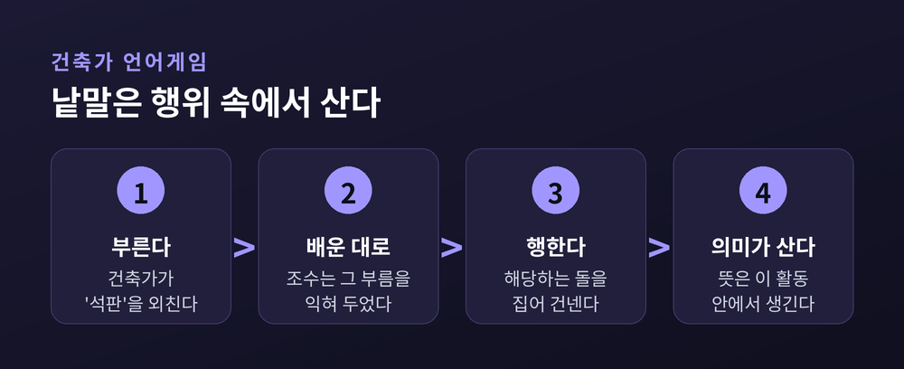
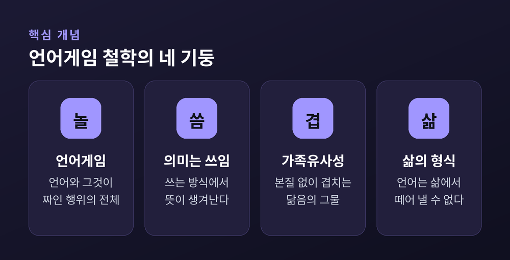
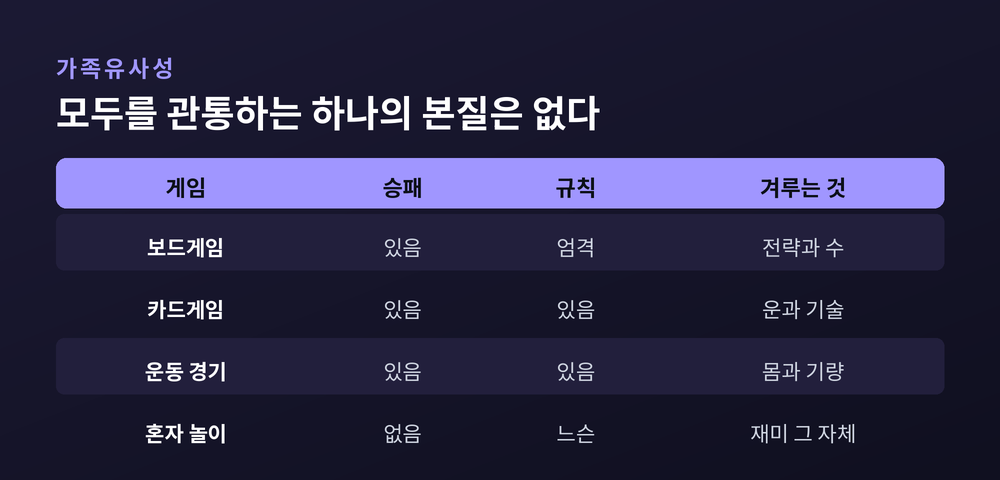
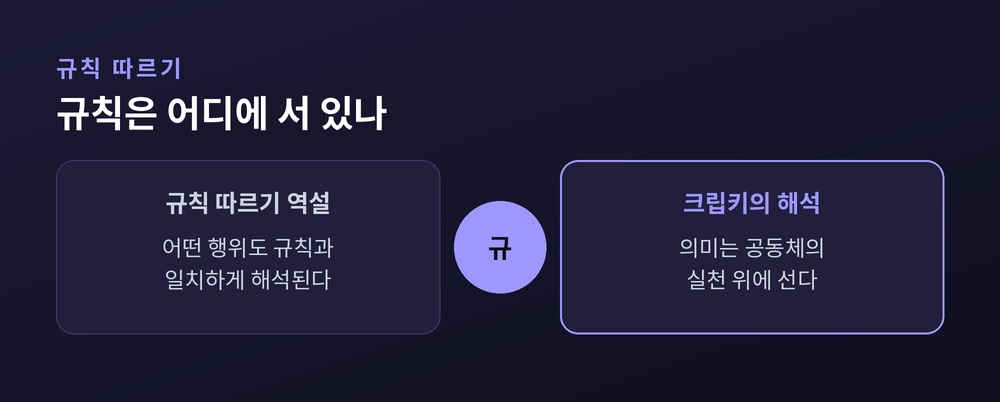

이번 글에서는 비트겐슈타인의 언어게임을 정리해 보겠습니다.
먼저 핵심부터 말씀드립니다. 낱말의 의미는 그 낱말이 가리키는 어떤 사물에 붙어 있지 않습니다. 우리가 그 낱말을 삶 속에서 어떻게 쓰는가, 바로 그 쓰임에서 의미가 생겨납니다.
이 글은 한 철학자의 생각을 소개하는 글일 뿐, 정답을 강요하려는 글이 아닙니다. 그가 왜 생각을 바꾸었는지, 언어게임이 무엇인지, 의미가 왜 쓰임인지, 그리고 그 생각이 어디까지 밀고 나갔는지를 차례로 살펴보겠습니다.
철학사에서 비트겐슈타인은 드문 사람입니다. 한 사람이 두 개의 철학을 남겼습니다.
전기 비트겐슈타인은 1921년 『논리철학논고』를 썼습니다. 후기 비트겐슈타인은 1953년 사후에 출간된 『철학적 탐구』를 남겼습니다. 두 책의 언어관이 너무 달라서, 학자들은 아예 '전기'와 '후기'로 나누어 부릅니다.
전기의 그는 언어를 세계의 그림이라 보았습니다. 이것이 이른바 그림 이론입니다. 뜻이 있는 문장은 세계의 어떤 사태를 그림처럼 그려 보인다는 것입니다. 사진이 풍경을 옮기듯, 문장은 사실을 옮깁니다. 언어의 임무는 실재를 정확히 재현하는 데 있고, 말할 수 있는 것의 경계도 거기서 정해집니다.
그런데 그는 자신의 그림을 스스로 넘어섰습니다. 시골 초등학교 교사로 몇 해를 보내고 케임브리지로 돌아온 뒤, 언어를 전혀 다른 눈으로 보기 시작합니다.

예전엔 언어가 세계를 비추는 거울이었습니다. 지금은 언어가 사람들 사이에서 벌어지는 활동이 됩니다. 이 전환이 후기 철학의 출발점입니다.
후기의 열쇠말이 언어게임입니다. 독일어로는 슈프라흐슈필(Sprachspiel)입니다.
언어게임이란 언어 사용의 단순한 예들, 그리고 그 언어가 짜여 들어가 있는 행위들 전체를 가리킵니다. 낱말만 따로 떼어 보는 것이 아니라, 낱말이 쓰이는 활동까지 통째로 봅니다.
비트겐슈타인이 든 유명한 예가 있습니다. 건축 현장의 두 사람입니다. 건축가 A가 "석판"이라고 외치면, 조수 B가 석판을 가져옵니다. 이 언어에는 "블록", "기둥", "석판", "들보" 같은 몇 마디밖에 없습니다. B는 그 외침에 맞는 돌을 가져오도록 배웠고, 그렇게 일합니다.
여기서 "석판"이라는 말의 의미는 무엇일까요. 사전 속 정의가 아닙니다. 그 말이 불러일으키는 행위, 곧 돌을 집어 건네는 활동 안에 의미가 있습니다.

같은 말도 상황이 바뀌면 다르게 작동합니다. "물!"이라는 한마디를 떠올려 보시길 권합니다. 그것은 명령일 수도, 질문에 대한 답일 수도, 위험을 알리는 외침일 수도 있습니다. 무엇을 뜻하는지는 그 말이 놓인 게임이 정합니다.
그래서 비트겐슈타인은 말합니다. 언어를 말한다는 것은 하나의 활동이며, 삶의 형식의 일부라고 말입니다. 언어는 삶에서 떼어 낼 수 없습니다.
여기서 그의 가장 유명한 문장이 나옵니다. "낱말의 의미는 언어 안에서의 그 쓰임이다."
20세기 철학에서 가장 많이 인용된 문장의 하나입니다. 의미는 낱말이라는 꼬리표 뒤에 숨은 어떤 대상이 아닙니다. 의미는 우리가 그 낱말을 다루는 방식에 달려 있습니다.
이 생각은 언어를 보는 시선을 통째로 바꿉니다. 예전의 언어는 실재를 기술하는 체계였습니다. 이제 언어는 사람들의 활동과 맥락에 뿌리내린 사회적 실천이 됩니다. 말은 세계를 그리기 전에, 먼저 사람들 사이에서 무언가를 합니다.
다만 한 가지는 신중히 짚어야 합니다. 비트겐슈타인은 "의미는 쓰임"을 완결된 이론으로 내세우지 않았습니다. 그는 "많은 경우에" 의미를 쓰임으로 볼 수 있다고 조심스럽게 말했습니다. 모든 낱말에 들어맞는 공식을 세운 것이 아니라, 의미를 오직 지시로만 보던 낡은 그림을 바로잡으려 한 것에 가깝습니다.

그렇다면 궁금해집니다. '게임'이라는 말 자체는 무엇을 뜻할까요. 모든 게임에 공통된 하나의 본질이 있을까요.
비트겐슈타인의 답은 "없다"입니다. 그 자리에 그는 가족유사성이라는 개념을 놓습니다.
보드게임, 카드게임, 운동 경기, 혼자 하는 놀이를 떠올려 보시면 좋겠습니다. 어떤 것은 이기고 지고, 어떤 것은 승패가 없습니다. 어떤 것은 기술을 겨루고, 어떤 것은 운에 맡깁니다. 모두를 관통하는 단 하나의 특징은 없습니다.
대신 특징들이 겹치고 엇갈립니다. 그가 쓴 표현은 이렇습니다. 겹치고 교차하는 유사성의 복잡한 그물망. 한 가족의 얼굴들이 눈매, 걸음걸이, 웃는 버릇으로 어렴풋이 닮았듯, 게임들도 그렇게 묶여 있습니다.

이 통찰은 강력합니다. 필요충분조건으로 딱 떨어지게 정의되지 않는 수많은 개념을 다룰 길을 열어 줍니다. 하나의 본질 대신, 겹치는 닮음으로 개념이 묶인다는 생각입니다.
물론 비판도 있습니다. 어떤 논평자들은 가족유사성이 너무 느슨하다고 지적합니다. 무엇이든 어떤 유사성으로든 이어 붙일 수 있다면, 개념의 경계가 흐려지지 않겠느냐는 물음입니다. 이 지적은 여전히 열린 논쟁으로 남아 있습니다.
후기 철학은 여기서 더 깊은 물음으로 들어갑니다. 규칙을 따른다는 것은 무엇일까요.
『철학적 탐구』에는 규칙 따르기 역설이 나옵니다. 어떤 행위도 규칙에 의해 결정될 수 없다는 것입니다. 왜냐하면 어떤 행위든 그 규칙과 일치하도록 해석해 낼 수 있기 때문입니다. 내가 지금 규칙을 옳게 따르고 있는지, 그것을 홀로 보증해 줄 사실이 좀처럼 보이지 않습니다.
여기서 사적 언어 논증이 이어집니다. 오직 나만 이해할 수 있는, 내 안의 감각만을 가리키는 사적인 언어는 성립할 수 없다는 논증입니다. 혼자만의 규칙으로는 '옳게 씀'과 '옳다고 여김'을 구별할 수 없기 때문입니다. 의미와 규칙은 결국 공적인 것, 공동체의 실천 위에 서 있다는 결론에 이릅니다.

이 대목은 훗날 큰 논쟁을 낳았습니다. 철학자 솔 크립키는 1982년 『규칙과 사적 언어에 관한 비트겐슈타인』에서 이 역설을 회의적 역설로 다시 세웠습니다. 그는 화자의 과거 사용도, 심상도, 성향도 여러 규칙과 똑같이 들어맞을 뿐이라고 논증했습니다.
다만 주의할 점이 있습니다. 크립키의 이 독해가 비트겐슈타인의 본뜻인지는 논쟁적입니다. 크립키 자신도 자신의 책이 비트겐슈타인에 대한 정확한 요약이 아니라 "자신에게 다가온 대로의 논증"이라고 밝혔습니다. 그래서 이 해석은 종종 '크립켄슈타인'이라는 별명으로 불립니다.
정리하면 이렇습니다.
비트겐슈타인은 언어를 세계의 그림에서 삶의 활동으로 옮겨 놓았습니다. 낱말의 의미는 사물에 붙은 이름표가 아니라, 사람들이 그 낱말로 함께 무언가를 하는 방식 속에서 태어납니다.
— 말의 뜻은 사전에 있지 않고, 우리가 사는 자리에 있습니다.
그러니 어떤 말이 낯설게 느껴질 때, 그 뜻을 캐묻기 전에 이렇게 물어보시면 어떨까요. 사람들은 이 말을 대체 어떤 자리에서, 무엇을 하려고 쓰는가.